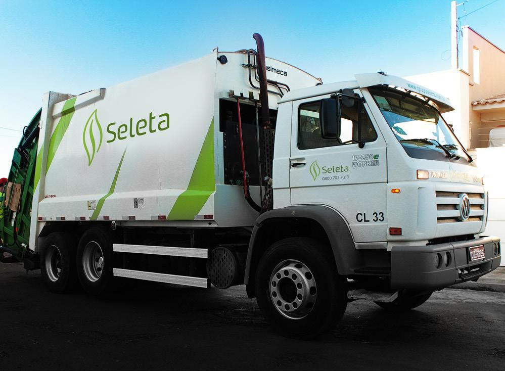

Escolha o tipo de
material e descarte certo
Selecione uma categoria abaixo para ver dicas específicas e os pontos de coleta em Altinópolis.
Agulhas, seringas e objetos cortantes
Materiais que podem perfurar ou cortar necessitam de descarte especial. Coloque-os dentro de uma garrafa pet ou de amaciante e leve em alguma das unidades a baixo.
📍 Pontos de coleta em Altinópolis
Super Farma 2
Farmácia Municipal
Super Farma 1
Postinho Azul
Hospital Da Misericórdia
Papel, plástico, vidro e metal
Materiais recicláveis devidamente separados podem ser transformados em novas matérias-primas, gerando renda e reduzindo o impacto ambiental.
📍 Pontos de coleta em Altinópolis

Seleta Coletica
Resíduos domésticos não recicláveis
Lixo doméstico comum inclui resíduos orgânicos e rejeitos que não têm destinação específica. O descarte adequado evita vetores e doenças.
📅 Cronograma de coleta seletiva – ASCALT
Cronograma por bairro
A partir de Segunda-feira 26/05 · Coleta a partir das 7h
- Figueiredo Walter
- Ulisses Guimarães
- Edmar Vicentini
- Vila Barroso
- Morada Gabriela
- Thomas Alkmin
- Armando Vicentini
- Vila Maria (e bairros adjacentes)
- COHAB
- Jardim Luiza
- Vila Toscana
- Figueiredo Fellipe
- Figueiredo Bombarda
- Centro
- Salim Calil (Jetirana)
- CECAP
- Parque do Café
- Jardim Helena
- Nova Altinópolis
- Coleta nos comércios
- Atendimento mediante agendamento
- 📞 (16) 98271-0785
Celulares, computadores e aparelhos
Equipamentos eletrônicos contêm metais pesados e substâncias tóxicas. Nunca os descarte no lixo comum — existem pontos específicos de recebimento.
📍 Pontos de coleta em Altinópolis
Eletronica Explanada
Pilhas alcalinas, baterias e acumuladores
Pilhas e baterias contêm metais pesados altamente tóxicos como chumbo, mercúrio e cádmio.Onde você comprou é seu ponto de Decarte, porem a maioria dos locais que realizam as vendas podem ser consideradas pontos pela lei da logistica reversa LEI Nº 12.305.
📍 Pontos de coleta em Altinópolis
Casa Da Agricultura
Supermercado Nori
Lâmpadas fluorescentes, LED e especiais
Lâmpadas fluorescentes contêm mercúrio e precisam de tratamento especializado. Mesmo quebradas, devem ir para pontos de coleta adequados. Onde você comprou deve ser seu ponto de Decarte! Pela lei da logistica reversa.LEI Nº 12.305. Lâmpadas LED pode ser descartadas no RECICLADO! "Seleta Coletiva"
📍 Pontos de coleta em Altinópolis
Eletrica Nova
Eletrica Nacional
Remédios vencidos ou sem uso
Medicamentos descartados incorretamente contaminam a água e o solo. A Farmácia onde você comprou o remédio é seu ponto de Decarte, porem todas as Farmácias podem ser consideradas pontos pela lei da logistica reversa. LEI Nº 12.305.
📍 Pontos de coleta em Altinópolis
Super Farma 2
FarmaVida
Drogaria Total "Dito"
Destinação correta de resíduos da construção civil
Entulho, terra, concreto, tijolos e restos de obras têm destinação especial definida por lei. Veja as orientações oficiais da Prefeitura de Altinópolis.

Coleta de resíduos volumosos agendada
Móveis, colchões, sofás e objetos de grande volume têm coleta especial agendada pela Prefeitura de Altinópolis. Saiba como solicitar.